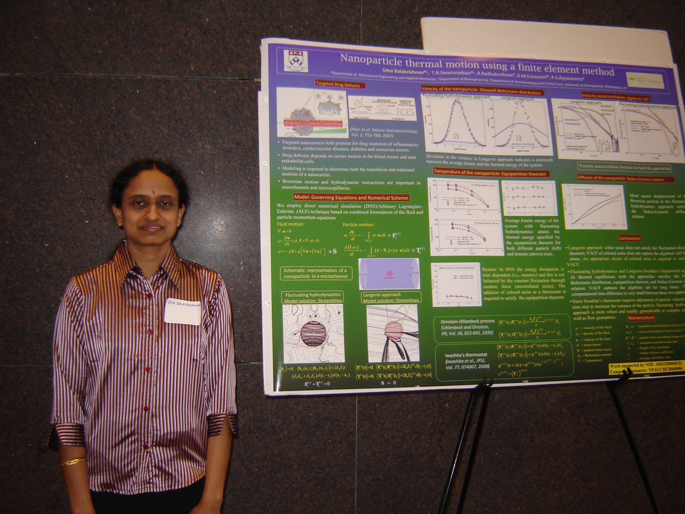
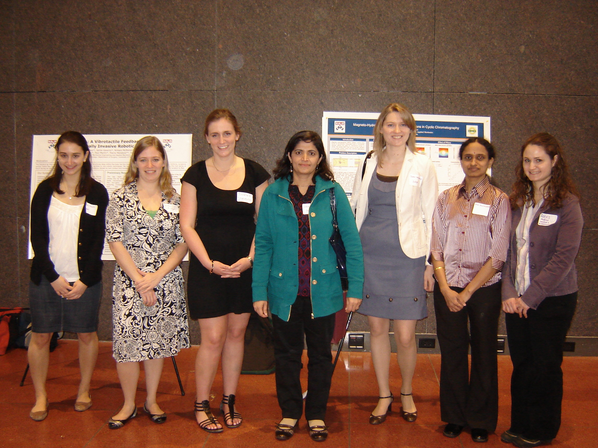

HONORS AND AWARDS
- Society of Women Engineers award FIRST PLACE Honors for excellence in engineering research 2010
Technical poster competition for a poster titled "Nanoparticle thermal motion using a finite element method".


- Biomedical Postdoctoral Fellowship (2009-12): University of Pennsylvania.
- Center for Risk Studies and Safety Lab Postdoctoral Fellowship (2007-09): University of California, Santa Barbara.
- National Board of Higher Mathematics Postdoctoral Fellowship (2004-05) to conduct research beyond Ph.D.
- Department of Science and Technology & International Center for Theoretical Physics (ICTP), Trieste, Italy
Young Scientist Fellowship (2004) to participate in an International Workshop at ICTP, Trieste, Italy.
- Council of Scientific and Industrial Research Young Scientist Fellowship (2002) to participate and present a paper at ASME International Conference held Montreal, Canada.
- Summer Internship 2000 sponsored by Ecole Polytechnique Federale de Lausanne, Switzerland for a period of two months to work with Prof.Jacques Rappaz.
- Research Fellowship (1999 - 2003), Indian Institute of Technology Madras